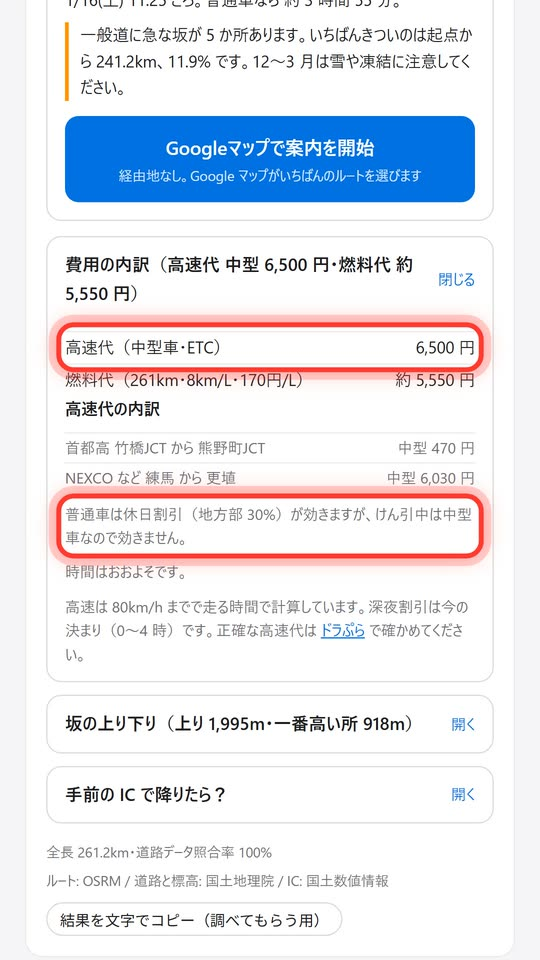
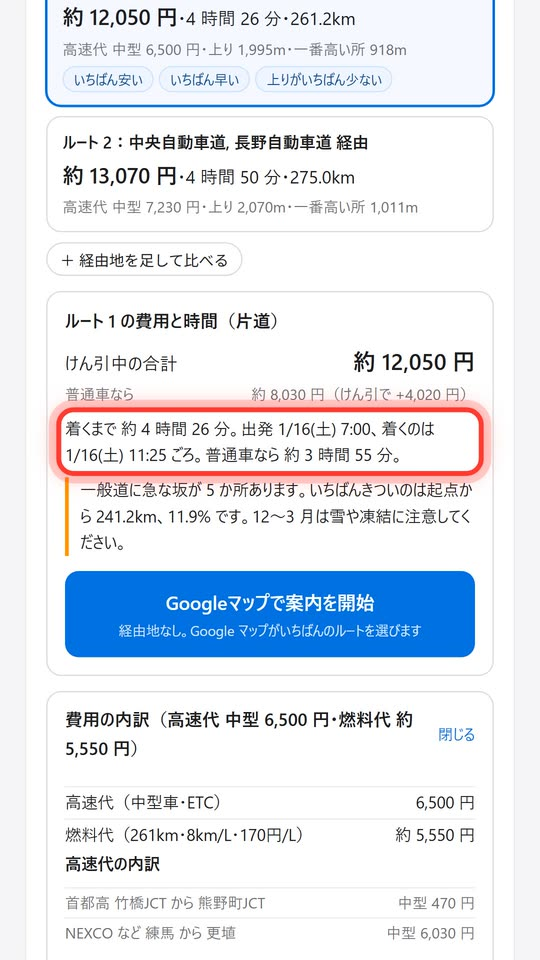
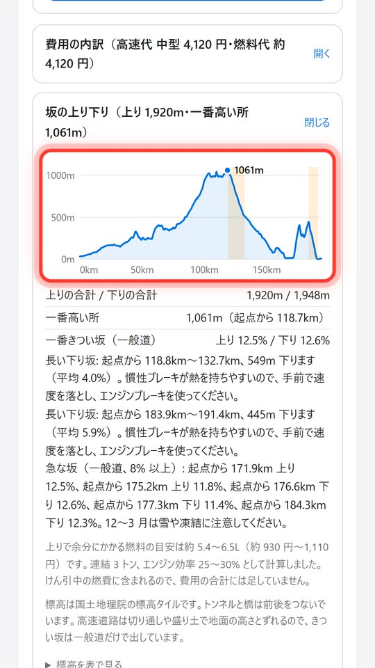
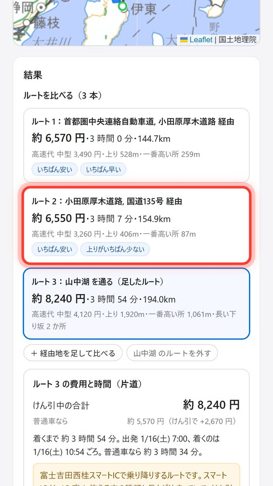

行き先を入れるだけで、キャンピングトレーラーをけん引した時の高速代・着く時刻・燃料代・坂を、ルートごとに出すツールです。
牽引ルートは、けん引した時の値段と時間で計算します。
1 軸のトレーラーを引くと、高速は中型車の料金になり、休日割引も効きません。牽引ルートは、中型車の料金で計算します。
けん引中は、高速は 80km/h まで。けん引した時の着く時刻を出します。
燃料代は、けん引中の燃費で計算します。燃費は自分の車に合わせて入れられます。
長い下り坂や急な坂を、図と数字で先に知らせます。下り坂の少ない道も選べます。峠を越える道も、経由地を足して比べられます。
決めたルートは、そのまま Google マップで案内できます。




画面の例: 東京駅から道の駅白馬（1 月の土曜 朝 7 時）、埼玉から伊東（山中湖を通る道を足したもの）。
この画面の地図・道路・標高は国土地理院、ルートは OSRM（© OpenStreetMap contributors）、IC の位置は国土数値情報（国土交通省）を加工して作成したものを使っています。
先着 10 名です。埋まったら、このページと Instagram でお知らせします。
キャンピングトレーラーをけん引する方。いまの高速代は、普通車ナンバーの車で 1 軸のトレーラーを引く時の、中型車の料金で出しています。2 軸のトレーラーでも、車軸の間が 1m 未満なら 1 軸とみなされ、一般レーンで申し出ると中型車の料金になります。車軸の間が 1m 以上の 2 軸や、1 ナンバーの車で引く場合は、大型車などの料金です。こうした方がいれば、対応を進めます。
2027 年 1 月 11 日（成人の日）まで。
試したあとに、使ってみた感想や評価、気になった点を教えてください。期間中に 1 回でも実際に走って、高速代や時間が合っていたかを教えてもらえると助かります。
Instagram の DM で「試したい」と送ってください。スマホのブラウザで使えます。アプリを入れる必要はありません。
当てはまるものを選んで「送る」を押してください。いくつでも選べます。いただいた声を見て、作るものを決めます。
開発中のツールです。高速代・時間・坂は目安で、実際と違うことがあります。道の幅・高さ制限・重さ制限は見ていません。
高速代は、NEXCO と首都高の高速道路のほか、第三京浜・横浜新道・横浜横須賀道路・京葉道路・小田原厚木道路・東京湾アクアラインなどに対応しています。西湘バイパス・新湘南バイパス・箱根ターンパイクなど、まだ料金を入れていない有料道路を通るときは、その分が高速代に入っていないことを、費用の内訳でお知らせします。
試していただくページでは、場所の検索・ルート・地図に Google マップを使います。そのため、このページの画面とは、ルートや金額が変わることがあります。